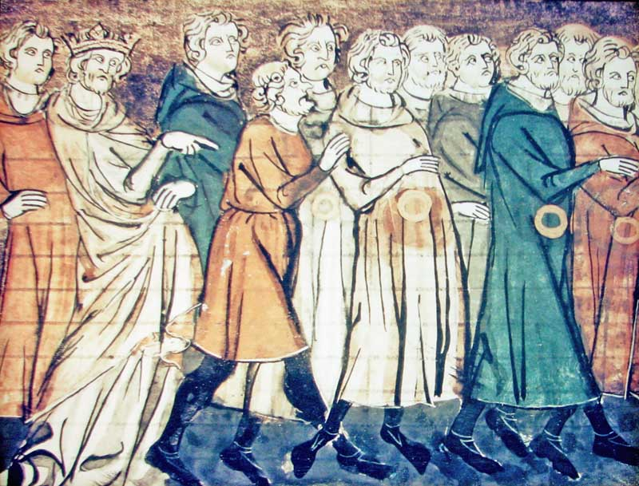

Израиль и Церковь. ПЕРВАЯ ЛЮБОВЬ
Это были благословенные времена устроения тела Мессии, где в гармонии созидались и укреплялись две маслины, когда Община Божия состояла из двух народов - Иудеев и Эллинов, пребывающих меж собой в любви.
Автор: Эфраим Калиш
Песн.7:1 "Оглянись, оглянись, Суламита! Оглянись, оглянись, - и мы посмотрим на тебя"…
Точнее перевести этот текст с иврита нужно так: «обратись, возвратись, Шуламит...!»

Куда призвана возвратиться Шуламит? Бог хочет, чтобы она возвратилась к своему имени (Шуламит – на ивр.: Полнота, Совершенство), стала бы Невестой, которую изначально устроил Себе Всевышний. Таково одно из возможных толкований этого места. Бог хочет, чтобы она вернулась к тому, что было задумано и сотворено от начала, что родилось от Духа Божия. (подробнее об этом см. статью "Шуламит. Танец двух ополчений")
Думаю, это пророчество о том, что начало воплощаться сразу после крестной смерти и воскресения Мессии Иешуа и излияния Духа Божия на всякую плоть. Это были благословенные времена устроения Тела Общины Божьей, имевшего в себе полноту, где в гармонии, созидались и укреплялись две маслины, когда Община Божия состояла из двух народов - Иудеев и Эллинов, пребывающих меж собой в любви.
Но, уже во второй половине 1-го века н.э. проявляется серьезная, проблема между братьями, иудеями и эллинами, соединенными в одном теле Мессии. О ней мы можем судить из посланий того же Павла. Помните: «..а ты, дикая маслина, … не превозносись…» (Рим.11:17,18), и «не хочу оставить вас, братия, в неведении … чтобы вы не мечтали о себе…» (Рим.11:25), и т.п. В этой же проблеме Господь обличает Церковь в послании семи церквям книги Откровения.
Толкование на место из кн. Откровения, которым я хочу поделиться, возможно, будет воспринято вами неоднозначно. Я не стану настаивать на окончательной истинности моей версии. Не верьте моим словам. Верьте Писаниям и Богу.
"Ты Оставил Первую Любовь Твою"
Откр.2:1-5 «Но имею против тебя то, что ты оставил первую любовь твою».
Думаю, речь здесь о том же, о чем говорят выше приведенные послания Павла. Бог уличает Церковь из язычников в разрыве отношений с Общиной верующих из иудеев: «ты оставил первую любовь твою».

О какой первой любви говорит здесь Дух? Вариантов может быть два. Во всяком случае, о двух любовях говорит Мессия - о любви к Богу и любви к брату (ближнему). «На сих двух заповедях утверждены Тора и Пророки». В конечном счете, они сливаются в единую любовь к Богу - не возможно любить Бога и ненавидеть брата. Впрочем, наверное, возможно. Вот вам хрестоматийный пример такой беззаветной любви к Создателю – Иоанн Златоуст. Нет сомнения, в том, что он много потрудился ради имени Всевышнего и, думаю, любил Его всем своим сердцем и разумением, но при этом был страшным антисемитом, т.е. искренне ненавидел брата своего. Думаю вы и сами можете привести другие подобные примеры. Возможно, предвидя это, Иешуа подчеркивает важность обеих любовей.
Откр.2:4 говорит о любви к брату!
Теперь позвольте мне пояснить мою точку зрения. Почему я считаю, что в Откр.2:4 речь идет скорее не о любви к Богу, а именно к брату?
Здесь важно понять какова главная идея послания к Ефесской церкви? И это даст нам ключ к пониманию претензий, обращенных к Ефесской церкви. Намеком здесь служат имена Всевышнего. Вы уже заметили, что каждое из посланий к семи церквям предваряется одним из Его имен. Во всей Библии - и в ТАНАХе, и Новом Завете Бог называет Себя многочисленными именами. Употребленное в каждом отдельном случае имя Всевышнего, вероятно, не случайно. Оно раскрывает суть того, что делает Бог. Например, Адонай Рафа (Бог Исцеляющий), или Шомер Исраэль (Хранящий Израиля), или Адонай Цваот (Бог Воинств) и т.п.
Книга Откровений начинается с того, что Бог семь раз произносит различные Свои имена, которые суть одно. И это же имя предваряет первое послание из списка.
(Откр.1:8-17)
8 Я есмь Альфа и Омега, начало и конец, говорит Господь, Который есть и был и грядет, Вседержитель (так расшифровывется 4-х буквенное ИМЯ: hовэ, hая, иhие - יהוה («Господь», а также «Я Тот, в Ком ты нуждаешься»)).
…
10 Я был в духе в день Господень (шаббат), и слышал позади себя громкий голос, как бы трубный, который говорил: Я есмь Альфа и Омега, Первый и Последний (Я есть ВСЁ - полнота);
…
12 Я обратился, чтобы увидеть, чей голос, говоривший со мною; и обратившись, увидел семь золотых светильников
13 и, посреди семи светильников, подобного Сыну Человеческому…
…
16 Он держал в деснице Своей семь звезд…
17 …Я есмь Первый и Последний,

СЕМЬ раз в Откр.1:8-17 Господь называет Себя именами, так или иначе выражающими ПОЛНОТУ. Так же многократно подчеркивается здесь число семь: семь духов, седьмой день - шаббат (день Господень), семь звезд, семь светильников, семь церквей, повторенные неоднократно в этой главе. Много раз семь, семь, семь…В еврейской традиции 7 – число полноты и совершенства.
Этим же именем Бог предваряет первое послание к (Ефесской) церкви:
«… так говорит Держащий семь звезд в деснице Своей, Ходящий посреди семи золотых светильников» (Откр.2:1). «Держащий семь звезд в деснице Своей» - т.е. Тот, Кто содержит все (семь - полноту) в руке Своей. И «Ходящий посреди семи золотых светильников» - т.е. Всевышний, обитающий в полноте церкви (посреди семи светильников).
Итак, ключ к пониманию нашего стиха о любви – имя Всевышнего, связанное с ПОЛНОТОЙ. Можно предположить, когда речь идет об оставлении первой любви, Бог заявляет о нарушении ПОЛНОТЫ Божьей в Церкви. Эта полнота была заложена изначально. Это был сверхъестественный Божий дар Церкви. Он излил любовь между братьями. И только вчера ненавидящие евреев язычники, сегодня воспылали любовью к своим иудейским братьям. Об этом свидетельствуют кн. «Деяний»: они, например, собирали обильные пожертвования для святых в Иерусалиме (о «естественной» ненависти окрестных народов к израильтянам можно прочитать свидетельства Флавия в «Иудейских Войнах»).

«Но ты оставил любовь к твоему брату иудею, тому, кто принес тебе свет евангелия, откровение, познание истины, жизнь вечную. Ты отринул, изгнал его! - В этом смысл обвинения Ефесской церкви. Не случайно именно в первом, из списка посланий, Бог обращается с таким посланием. Вероятно, в Его глазах полнота – это основа развития и процветания Общины Божьей, «Полнота наполняющего все во всем».
Есть еще одна деталь, которая указывает в нашем случае (Откр.2:1-5), именно на любовь к брату, а не к Богу: «знаю дела твои, и труд твой, и терпение твое, … Ты много переносил и имеешь терпение, и РАДИ ИМЕНИ МОЕГО трудился и не изнемогал». (Откр.2:2-3). Трудиться и не изнемогать РАДИ ИМЕНИ ГОСПОДА возможно только любя Бога!
«Но имею против тебя то, что ты оставил первую любовь твою» (Откр.2:4)
Речь НЕ идет о том, что церковь в ЗАБЛУЖДЕНИИ своем творила многие дела Божьи, думая, будто делает это в любви к Нему (также и Златоуст искренне любил Отца, но ненавидел брата). БОГ Сам ясно свидетельствует ей: «ЗНАЮ дела твои… Ты трудился и не изнемогал РАДИ ИМЕНИ МОЕГО». Т.е., Я свидетель – ты любишь Меня, ты доказал это своими делами.

«Но имею против тебя то, что ты оставил первую любовь твою»: Бог обвиняет Церковь за то, что та утратила полноту - она отвергла евреев: привитые ветви отторгли дерево. Они стали превозноситься над маслиной. Ветви провозгласили себя всем деревом (полнотой), являясь, в действительности только привитой к нему частью. Полнота, которая была в первой любви, "золотой век" церкви, когда еще живы были апостолы и в ней сосуществовали в любви ученики Иешуа – евреи, исполняющие Закон, и уверовавшие из язычников ученики Мессии.
Чем важно такое понимание этого места Писания?
Тем, что здесь указывается ясный путь исправления, восстановления полноты Божьей в Церкви:
«Итак вспомни, откуда ты ниспал, и покайся, и твори прежние дела; а если не так, скоро приду к тебе, и сдвину светильник твой с места его, если не покаешься».
Мы говорили об этом в самом начале: «Вернись Шуламит (Невеста Господня) к своему имени – Полнота (Совершенство). Вернись к тому состоянию, как ты была задумана и сотворена от начала», вспомни, откуда ты ниспала.
Несколько слов о первой любви
Если говорить о моей благословенной жене, сейчас я люблю ее гораздо больше, чем в начале. Моя любовь к ней стала ценнее и глубже. Такое явление вполне нормально, если семья живет в Боге и Его любви. Я бы не хотел вернуться к первой любви, она была не зрелой, поверхностной... Хотя да, адреналина было много и все такое…
Это естественно, что первая любовь к Богу и первая любовь к ближнему носят во многом корыстный характер. Посмотрите, например, на любовь младенца к своей матери: тепло, ласка, пища, защита, сухие пеленки - вот что для нас первая любовь к матери. Такую любовь нельзя еще назвать совершенной. Зачем же тогда Богу настаивать на том, чтобы Ефесская церковь (а в ее лице имеется в виду вся Церковь) вернулась к первой любви, далекой от совершенства?

Первая любовь учеников из язычников к братьям иудеям, наверное, тоже была не совершенна. Те несли им исцеление, освобождение, тепло и свет Слова Всевышнего.
Но первая любовь эллинской церкви сменилась не более совершенной любовью, а завистью; почтение и благодарность - превозношением, гордостью и ненавистью, верующих к еврейским братьям.
Поэтому Бог настаивает на том, чтобы мы вернулись к той ступени, на которую некогда поднялись, когда приняли протянутую братскую руку, в которой не камень, но хлеб. Эта любовь, конечно, нуждается в развитии и возрастании.. Но для этого необходимо вернуться к началу, восстановить разрушенное, чтобы стало возможным восхождение на следующие ступени.
Сегодня по всему лицу Земли Бог вкладывает в сердца церквей и отдельных верующих сверхъестественную любовь к Израилю, даже там, где никогда не видели живого еврея. Это реализация написанного в Откр. и многих пророках - возвращение к первой любви. Благословение и полнота приходит в эти народы...
Интересно, в 1960 г. по требованию папы (Анджело Джузеппе Ронкалли, который в 1958 г. стал папой Римским под именем Иоанн XXIII) из молитвы, читаемой на Страстную пятницу, были исключены проклятия в адрес евреев (в практике Православной церкви они сохраняются до сего дня). Папа составил свою молитву: «Мы осознаем теперь, что были слепы в течение веков, что не ценили красоты Избранного народа и черт наших возлюбленных братьев. Мы осознаем, что на лбу у нас Каинова печать. По нашей вине наш брат Авель столетиями орошал землю кровью и слезами, – только потому, что мы забыли Твою любовь. Прости нам неоправданное осуждение евреев. Прости нам, что распиная их, мы распяли Тебя во второй раз. Прости нас. Мы не ведали, что творили".